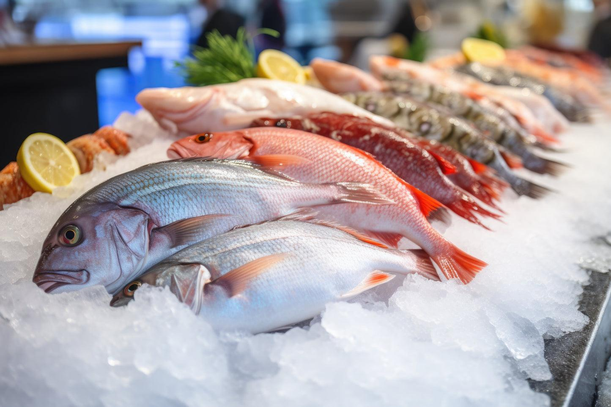
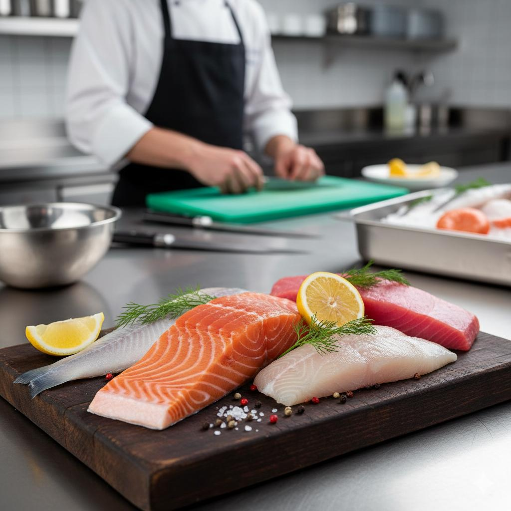

Chargement
FRAÎCHEUR • QUALITÉ • CONFIANCE
Le meilleur de la mer,
près de chez vous.
Découvrez notre sélection de poissons et produits de la mer, soigneusement choisis pour vos repas en famille et vos tables professionnelles à Bamako.
✓ Qualité sélectionnée • Livraison à Bamako

FRESH FISH MALIAjoutez votre photo de poissons dans images/hero-fish.jpg
La fraîcheur avant toutUne sélection de qualité
01Qualité sélectionnée
02Prix clairs en FCFA
03Service à Bamako
04Particuliers & professionnels
NOTRE SÉLECTION
Nos poissons à découvrir
Des produits pour vos repas quotidiens comme pour vos grandes occasions.
Les produits seront affichés ici dès qu'ils seront ajoutés dans le panneau d'administration.

LE GOÛT DE LA QUALITÉAjoutez une photo dans images/quality-fish.jpg
NOTRE ENGAGEMENT
La qualité dans votre assiette.
Chez Fresh Fish Mali, nous voulons rendre les produits de la mer plus simples à choisir et à commander. Notre équipe vous accompagne pour trouver le bon produit, le bon format et la quantité adaptée.
- Une sélection pensée pour vos besoins
- Des formats au détail et en gros
- Un service de proximité à Bamako
RESTONS EN CONTACT
Comment pouvons-nous vous aider ?
Pour une commande, une livraison ou un devis professionnel, contactez notre équipe.
☎
Nous contacter →Contact & commandes
Appelez-nous ou écrivez-nous pour connaître les disponibilités et les conditions de livraison.
Ajoutez votre numéro de téléphone et votre WhatsApp dans script.js.